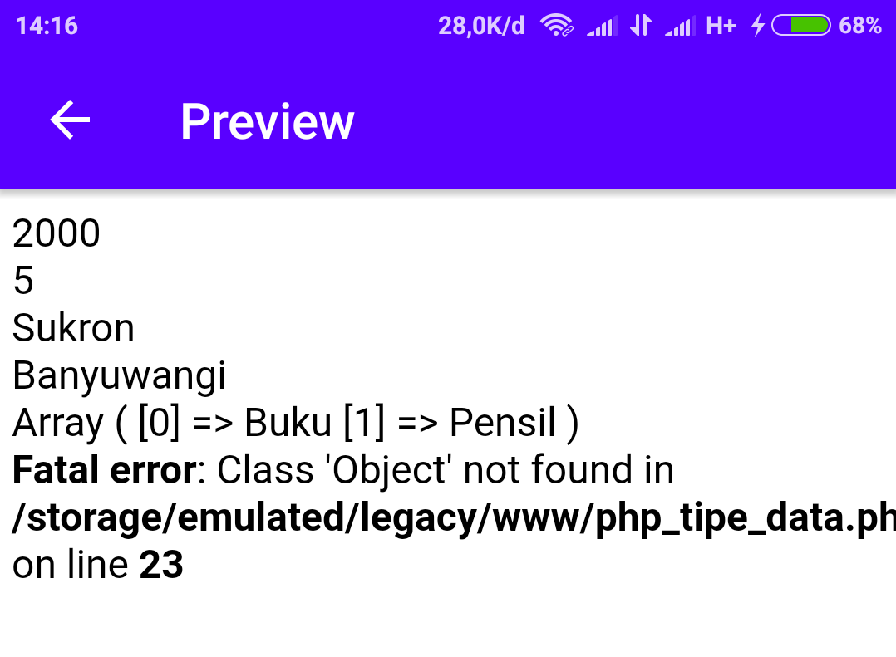

PHP mengenal dua tipe data sederhana:
- numerik
- literal
dan dua tipe data yang tidak sederhana:
- array
- object
Contoh:
<?php
//tipe data numerik
$harga = 2000;
$jumlah = 5;
echo $harga."<br>";
echo $jumlah."<br>";
//tipe data literal
$nama = "Sukron";
$alamat = "Banyuwangi";
echo $nama."<br>";
echo $alamat."<br>";
//tipe data array
$my_array = array("Buku", "Pensil");
print_r($my_array)."<br>";
//tipe data object
$obj = new Object();
?>
Hasilnya:

Error tu,
iya, memang error. Karena kita tidak membuat kelas Object-nya. Apa itu kelas? kelas akan dibahas pada materi selanjutnya. Sabar...